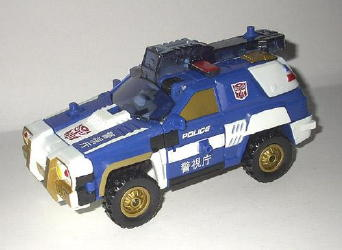
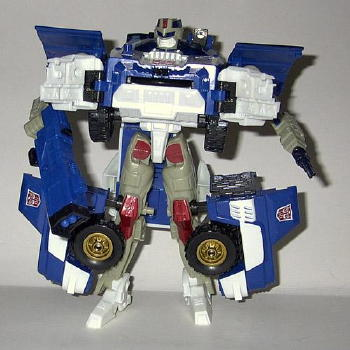
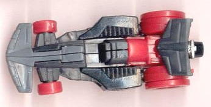
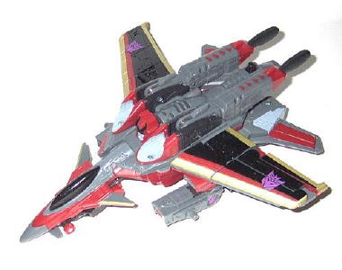
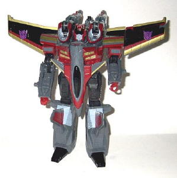

Longarm
Longarm
Set Price : ~$23 U.S.
(NOTE: Because these sets are repaints,
these are not full-blown reviews. They mainly cover any changes made to
the mold and the color scheme, and merely compares them to their original
molds. For a review of Armada Red Alert w/ Longarm-- the predecessor to
Prowl w/ Longarm-- click
here
. For a review
of Armada Starscream w/ Swindle-- the predecessor to Starscream w/ Zapmaster--
click
here
.)
Longarm
Allegiance
: Minicon
Size
: Mini-Con
Difficulty of Transformation
: Very
Easy
Color Scheme
: Black, gray, deep
blue, and some silver
Rating
: 5.3
Energon Longarm has the
same color scheme as
Powerlinx Longarm
, but
now he has a blue crane arm and waist piece instead of having them colored
orange. Woopity woop woop woop-- he's so similar to his previous versions,
it's not even worth the webspace to put up pics of this hardly-different-at-all
repaint. Hardly a well-thought-out toy, though at least the colors go okay
together. But still, Longarm really needs to go beyond being primarily
black...
No mold changes have
been made to Longarm.
 Prowl
Prowl


Allegiance
: Autobot
Size
: Mega
Difficulty of Transformation
: Very
Easy
Color Scheme
: Deep blue, white,
gray, black, transparent smoky black, and some metallic red, metallic gold,
dark blue, and red
Powerlinx ports
: 5 (2 gimmicked)
Rating
: 8.4
Egads, ANOTHER Prowl!?
Give the name a rest already, Hasbro! Well, name aside, this is a pretty
good repaint, and the best color scheme this mold has had so far. The blue
and white go VERY well together, and the gold, black, and red are great
secondary colors. Some of the internal robot colors-- such as the legs
and arms-- are the same colors as that on Powerlinx Red Alert, but it's
not so much that it's impossible to ignore. Most of his paint apps are
also the same as Powerlinx Red Alert's, but with different colors like
gold, and that almost always is a good color. There are a few paint apps
that differ, though; for one thing, Autobot symbols have been added to
the sides of the vehicle mode instead of a rescue deco, and they look pretty
nice. The English writing used on part of Powerlinx Red Alert has also
been replaced with Japanese writing (I have no idea what it says, sorry--
I'd imagine "Police" or something like that.) But it is a nice tie in with
the deluxe Energon (NEW mold) Prowl, as he has Japanese symbols on him,
too. So overall, a decent repaint, even if not all of the colors have changed...
No mold changes have
been made to Sam's Club Prowl.
Zapmaster

Allegiance
: Minicon
Size
: Mini-Con
Difficulty of Transformation
: Very
Easy
Color Scheme
: Black, red, dull gray,
and some silver
Rating
: 3.9
Energon Zapmaster isn't
too different from Armada Swindle, but a lot of the colors have been switched
around, so I figued a quick pick of the vehicle mode would help visualize
what the new toy looks like now. I don't like the red wheels at all-- they
look gaudy-- but otherwise, the red, black, and gray go together fairly
well. Still a crummy mold, though, and he really needs more paint apps...
No mold changes have
been made to Zapmaster.
 Starscream
Starscream


Allegiance
: Decepticon
Size
: Mega
Difficulty of Transformation
: Medium
Color Scheme
: Red, dull gray, black,
and some metallic gold and very pale glossy blue
Powerlinx ports
: 3 (1 gimmicked)
Rating
: 8.7
This repaint of Armada
Starscream is made to look very similar to
Energon
Starscream
, at least when it comes to the color scheme. And it works
very nicely-- it's darker than Armada Starscream's, making the toy look
a bit more evil. The black, gold, red, and gray work wonderfully together,
and some of the wing paint apps are brand-new-- certainly a rarity for
a bargain-priced exclusive toy. I'm not all that fond of the ghastly blue,
but it's used sparily, and it's a nice nod to the fact that Energon Starscream
is an "energon ghost", so I can still see why it was used. So despite the
fact that this is the fifth time that this mold has been used, it's still
different enough from its previous versions to be considered worth purchasing,
especially since it's at a bargain price. It's really quite a good repaint.
No mold changes have
been made to Sam's Club Starscream.
The Sam's Club two-pack is an excellent buy at just $23 for two Megas- you basically get the second one for just $3! And both of the main toys are pretty good repaints, themselves-- a rarity among bargain store exclusives, to be certain. Recommended if you have a Sam's Club membership and don't have any of the previous versions of these molds-- otherwise, mildly recommended.
No Stats
Review by Beastbot
(Pics from Cobra Island Toys .)